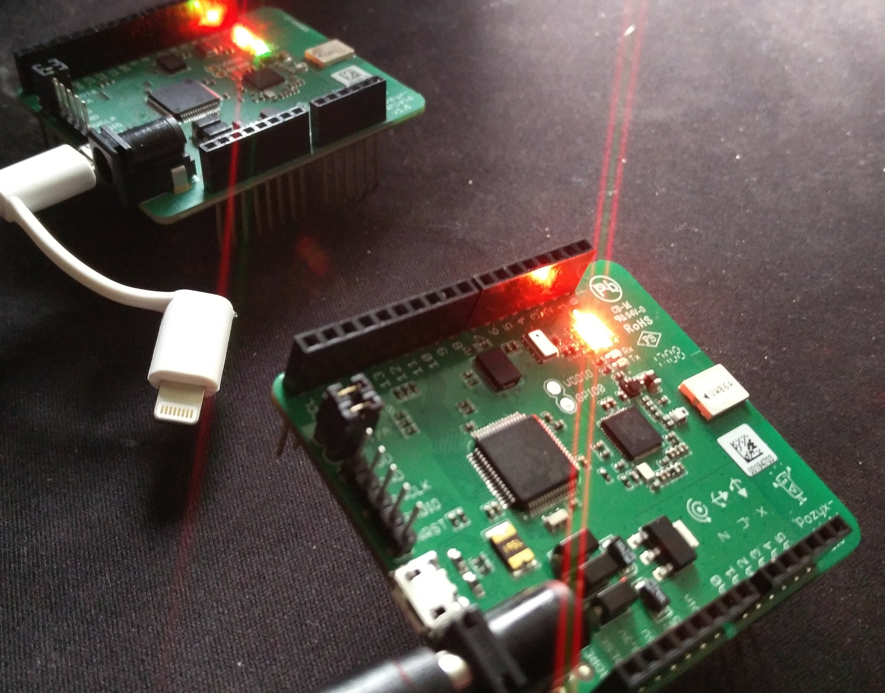

Problem Statement
- Develop a software system to use the Pozyx positioning hardware for physics labs.
- Create abstraction about the system to make it as easy as possible for educators and students to use.
Motivation

Many high school and college physics courses require labs with innacurate measuring from timing by hand, visually estimating distance, etc.
Pozyx, a super accurate positioning system by Pozyx Labs, could be implemented as a physics data tool if useful software were written for it to do so.
Figure 1: Two Pozyx tags in operation
Design Criteria
- A uniform software solution for interfacing with Pozyx and using its hardware for physics education.
- Commands to the hardware must implement a Pozyx library written in Python, so most code will be in Python.
- Graphical user interface (GUI) needed for easy interaction in the classroom, and Java using the JavaFX package chosen for portability and simple development.
- Means to analyze and visualize data both while it is being collected and after it is collected are required.
- Must create a simple, cross-platform installation with streamlined usage patterns so educators and students can quickly and easily start using the software.

Figure 2: An example of debugging some Python code
Software Solution
Figure 3: The GUI prototype with features labeled
Testing
Figure 4: The materials involved in my inclined plane acceleration lab
Figure 5: Test of cart displacement (mm) over time (s)
Evaluation
My research shows that my implementation of a software abstraction over the Pozyx positioning hardware has been successful in creating a tool to easily and effectively improve physics labs.
- I successfully created working data collection and user interface software for the system.
- My design of the software shows plenty of potential for further improvement and tailoring towards education.
- When tested with a physics lab, I was able to easily collect data that had an outstanding <1% error.
- Cross-platform development is prone to bugs and edge cases, so my software is most stable on Windows.
- The Pozyx Python library is still being developed by Pozyx Labs, so both breaking changes and beneficial improvements must be considered in the future.
- Currently, the price of each Pozyx device at around $150 USD could be rather steep for many educators, but prices of Pozyx or similar hardware solutions will likely drop with greater production and implementation.
Implementation Plans
Figure 6: The university team and I are investigating professional sports applications
- Develop stable distributions for Windows, OS X, and Linux.
- Create 3-dimensional real time graphing visualizations.
- Implement a data-replay system to allow the "real-time" visualization of data collected in the past stored in .csv files.
- Distribute my software to physics educators and test its efficacy in high-school and college classrooms through redesigned kinematic physics labs.
- Investigate other applications of a software abstraction for Pozyx, such as in professional sports, robotics, or behavioral studies.
Acknowledgements
Special thanks goes to the university team with whom I collaborated. All pictures taken or created by researcher.